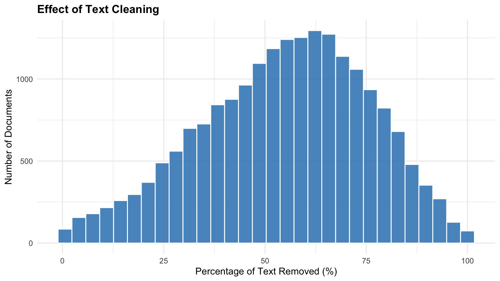
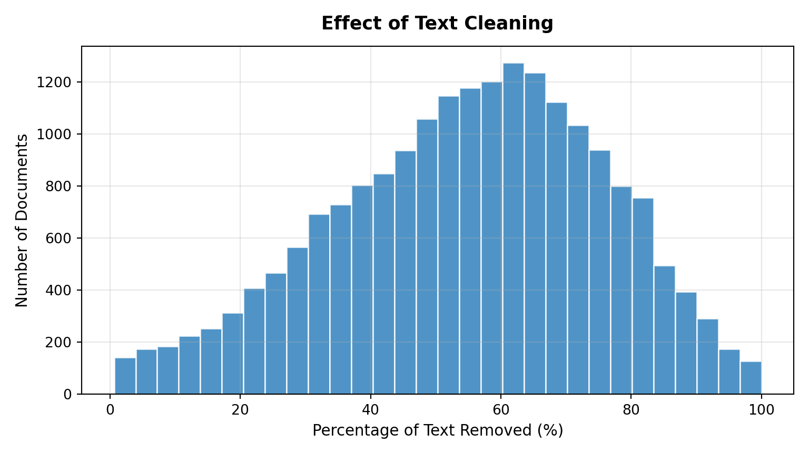
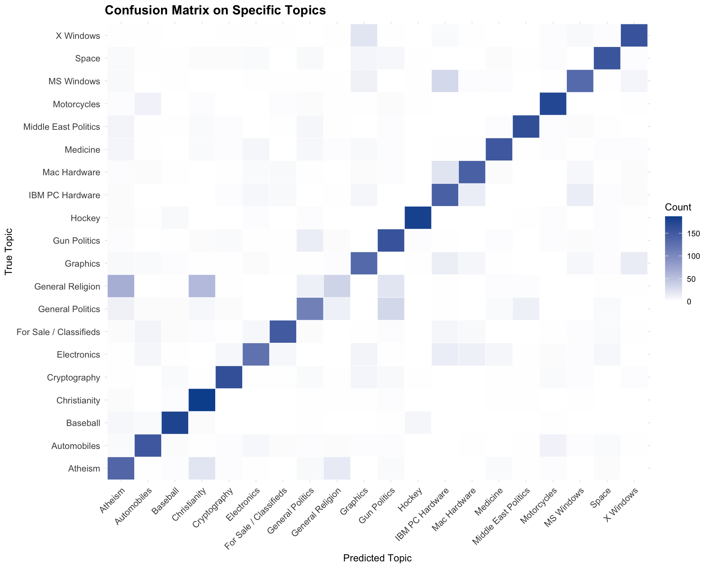
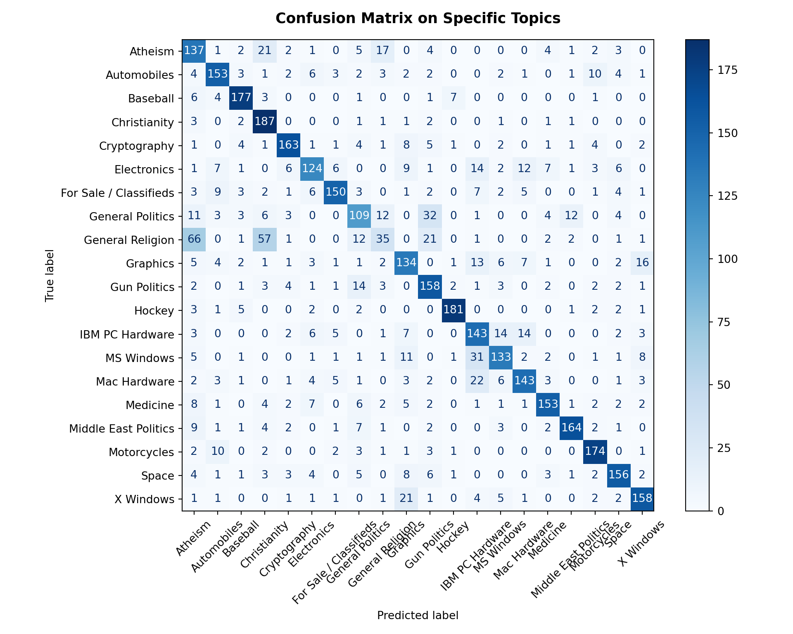
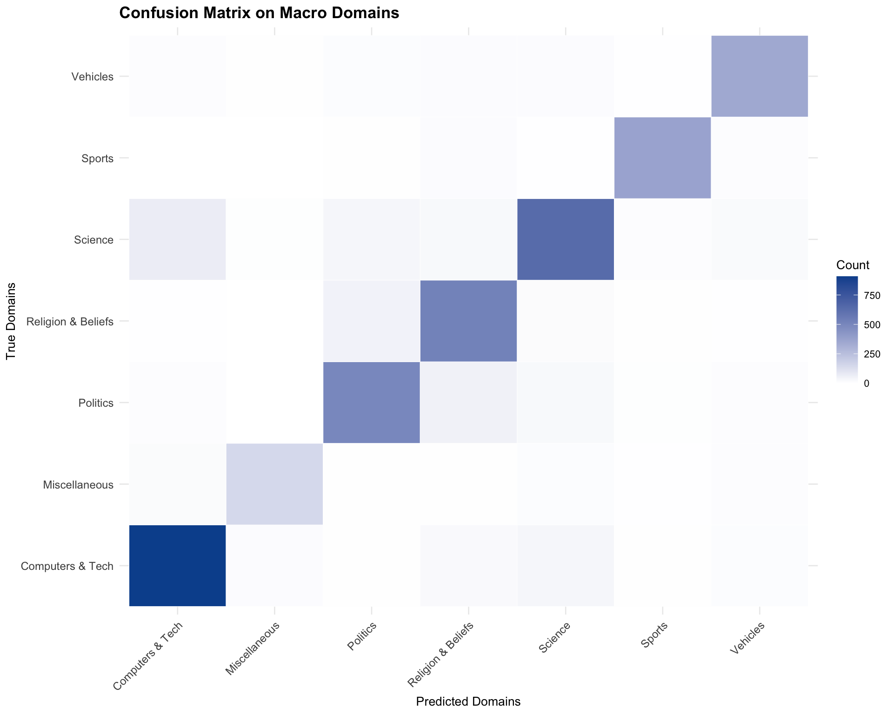
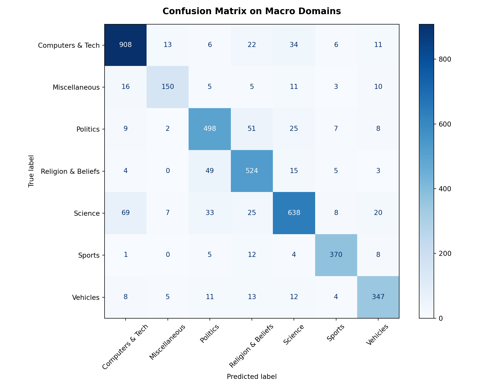
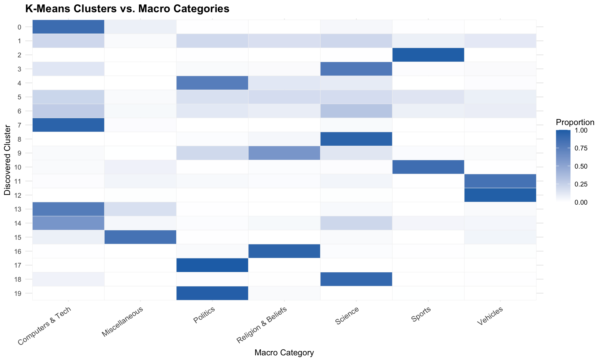
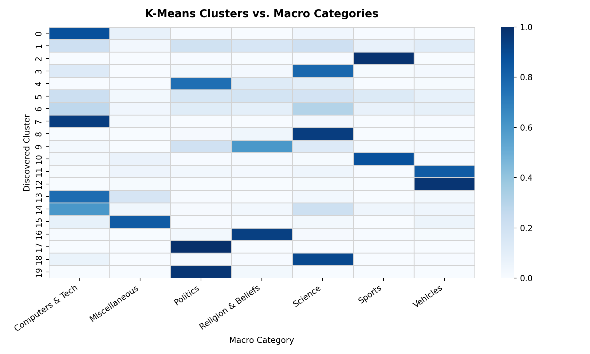
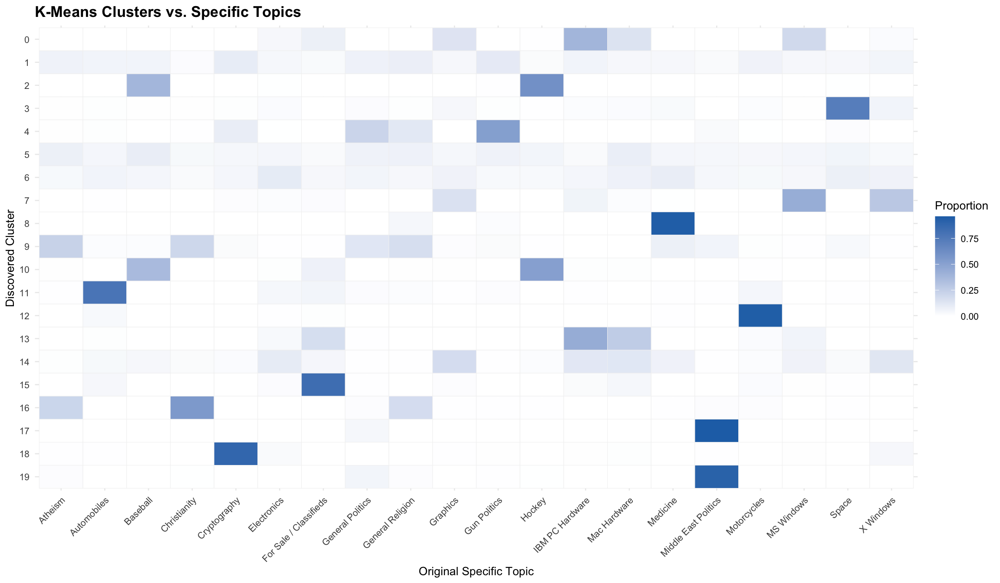
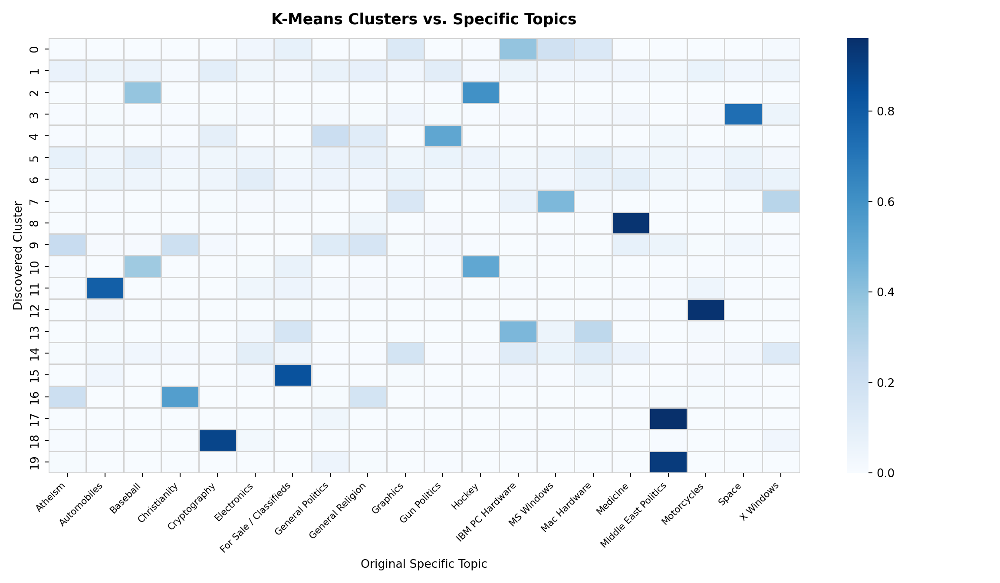

library(tidyverse)
library(knitr)
library(stringr)
library(purrr)Twenty Newsgroups
About the Data
This dataset contains approximately 20,000 Usenet discussion posts organized into 20 newsgroups covering topics such as computer hardware, science, sports, politics, religion, and vehicles. Originally collected by Ken Lang in 1995 for the Newsweeder system, the dataset provides a collection of real-world, user-generated text spanning a wide range of subjects, writing styles, and conversational patterns.
Classifying text by topic is a common natural language processing (NLP) task that can help organize large collections of documents, categorize incoming messages, and make information easier to retrieve. However, text data often contains more than just the information relevant to the task. In addition to the main discussion, Usenet posts may contain structural metadata such as email headers, sender information, subject lines, quoted replies, and signatures. Although these elements may provide useful contextual information, they can also introduce noise or create misleading associations with the target category. As a result, a model may achieve high classification accuracy by recognizing metadata patterns rather than learning the actual subject matter of a discussion.
This dataset provides an opportunity to investigate how text preprocessing influences model performance and the patterns learned from unstructured text. By comparing classification models trained and evaluated on raw and structurally cleaned posts, we can examine the extent to which metadata contributes to predictive performance and whether removing these shortcuts leads to more meaningful topic classification. We also explore whether unsupervised clustering can independently uncover meaningful topic groupings without access to the original category labels, and how these groupings compare with human-defined topics.
Access the Data
Metadata
Dataset Name
20 Newsgroups
Dataset Characteristics
Text, Multivariate
Subject Area
Natural Language Processing, Social Discourse
Associated Tasks
Classification, Clustering, Topic Modeling
Feature Type
Categorical, Text
Instances
19,997 records
Features
3
Has Missing Values?
No
Variables
| Variable Name | Role | Type | Description | Missing Values |
|---|---|---|---|---|
doc_ID |
ID | Categorical | Unique document identifier (original Usenet file number) | No |
category |
Target | Categorical | Original newsgroup category name (e.g., alt.atheism, sci.space) |
No |
text |
Feature | Text | Unmodified post text including routing headers, quotes, and body | No |
Key Features of the Dataset
Each record in this dataset corresponds to an individual Usenet discussion forum post and includes the following features and metadata:
- Identifier (
doc_ID) – ID number preserved from the original Usenet newsgroup archive within its category. - Original Category (
category) – The specific Usenet newsgroup hierarchically labeled by netnews taxonomy (e.g.,alt.atheism,comp.graphics,rec.sport.hockey,sci.space). - Raw Text (
text) – Unmodified message content containing technical Usenet routing paths, sender email addresses, timestamps, quoted reply chains, and sign-offs.
Purpose and Use Cases
This dataset supports investigations into:
- Natural Language Processing & Text Classification: Benchmarking classical and modern machine learning algorithms (Multinomial Naive Bayes, Support Vector Machines, Logistic Regression, neural networks) on high-dimensional sparse text data.
- Impact of Text Preprocessing Decisions: Systematically evaluating how stripping structural artifacts (headers, quoted replies, signatures) affects model accuracy and lexical feature importance versus retaining raw metadata.
- Unsupervised Text Clustering: Evaluating whether unsupervised clustering algorithms (such as K-Means, hierarchical clustering, and LDA topic modeling) naturally uncover the human-defined categories or organize documents according to writing style and shared conversational filler.
Case Study
Objective
Text classification can help organize large volumes of unstructured information, but the quality and reliability of predictions depend heavily on how text is prepared. In this dataset, raw posts contain both topic-related discussions and structural elements such as email headers, sender affiliations, subject lines, and quoted replies. These elements may inadvertently reveal information about the original newsgroup category, allowing a model to achieve high classification accuracy by exploiting metadata rather than learning meaningful topical patterns from the discussion itself.
In this case study, we will focus on several key questions:
How accurately can a Multinomial Naive Bayes model classify discussion posts into their original newsgroup categories using TF-IDF features?
To what extent does the removal of headers, quoted replies, and other structural artifacts affect classification performance, and does the raw text contain potential sources of data leakage that inflate model performance?
Can K-Means clustering identify meaningful topic groupings without access to the original category labels, and how do these groupings compare with the predefined categories?
By comparing classification performance on raw and cleaned text, we can investigate how preprocessing affects model performance and identify potential data leakage arising from structural metadata. A model that performs well on raw text may not necessarily have learned the underlying topics. Instead, it may rely on superficial cues that happen to correlate with the target labels. We will also examine the patterns and limitations of unsupervised clustering to understand when automatically discovered groups align with human-defined topics and when they reflect shared vocabulary or writing styles instead.
Analysis
Loading Libraries
import tarfile
from pathlib import Path
import pandas as pd
import numpy as np
import re
from IPython.display import Markdown
# Visualizations
import matplotlib.pyplot as plt
import seaborn as sns
# NLP
import nltk
from nltk.corpus import stopwords
from nltk.stem import WordNetLemmatizer
from nltk.tokenize import RegexpTokenizer
for resource in ['corpora/wordnet', 'corpora/omw-1.4', 'corpora/stopwords']:
try:
nltk.data.find(resource)
except LookupError:
nltk.download(resource.split('/')[1], quiet=True)
# Modeling
from sklearn.model_selection import train_test_split
from sklearn.pipeline import Pipeline
from sklearn.feature_extraction.text import TfidfVectorizer
from sklearn.naive_bayes import MultinomialNB
from sklearn.metrics import accuracy_score, classification_report, ConfusionMatrixDisplay
from sklearn.cluster import KMeans1. Data Loading & Overview
First, we download the compressed dataset and save it to the local directory data/raw/twenty_newsgroups/. We then iterate through each category directory to ingest every message, recording its newsgroup category, document ID, and full raw text.
data_dir <- "../../data/raw/twenty_newsgroups/20_newsgroups"
tar_path <- "../../data/raw/twenty_newsgroups/20_newsgroups.tar.gz"
if (!dir.exists(data_dir)) {
message("Extracting 20 Newsgroups dataset...")
untar(tarfile = tar_path, exdir = dirname(data_dir))
}
category_dirs <- list.dirs(data_dir, full.names = TRUE, recursive = FALSE)
df <- purrr::map_df(category_dirs, function(cat_dir) {
cat_name <- basename(cat_dir)
files <- sort(list.files(cat_dir, full.names = TRUE))
raw_texts <- vapply(
files,
readr::read_file,
character(1),
locale = readr::locale(encoding = "latin1"),
USE.NAMES = FALSE
)
tibble(
category = cat_name,
doc_ID = basename(files),
text = raw_texts
)
})
cat(sprintf("Number of documents: %s\n", format(nrow(df), big.mark = ",")))Number of documents: 19,997cat(sprintf("Number of categories: %d\n", n_distinct(df$category)))Number of categories: 20df |>
mutate(text = paste0(substr(text, 1, 55), "...")) |>
head(3) |>
kable()| category | doc_ID | text |
|---|---|---|
| alt.atheism | 49960 | Xref: cantaloupe.srv.cs.cmu.edu alt.atheism:49960 alt.a… |
| alt.atheism | 51060 | Xref: cantaloupe.srv.cs.cmu.edu alt.atheism:51060 alt.a… |
| alt.atheism | 51119 | Newsgroups: alt.atheism |
| Path: cantaloupe.srv.cs.cmu.edu… |
data_dir = Path("../../data/raw/twenty_newsgroups/20_newsgroups")
tar_path = Path("../../data/raw/twenty_newsgroups/20_newsgroups.tar.gz")
if not data_dir.exists():
print("Extracting 20 Newsgroups dataset...")
with tarfile.open(tar_path, "r:gz") as tar:
tar.extractall(path=data_dir.parent)
documents = []
for category_dir in sorted(data_dir.iterdir()):
if not category_dir.is_dir():
continue
category = category_dir.name
for file_path in sorted(category_dir.iterdir()):
if not file_path.is_file():
continue
text = file_path.read_text(encoding="latin-1", errors="replace")
documents.append({
"category": category,
"doc_ID": file_path.name,
"text": text
})
df = pd.DataFrame(documents)
print(f"Number of documents: {len(df):,}")Number of documents: 19,997print(f"Number of categories: {df['category'].nunique()}")Number of categories: 20Markdown(df.assign(text=df["text"].str[:55] + "...").head(3).to_markdown())| category | doc_ID | text | |
|---|---|---|---|
| 0 | alt.atheism | 49960 | Xref: cantaloupe.srv.cs.cmu.edu alt.atheism:49960 alt.a… |
| 1 | alt.atheism | 51060 | Xref: cantaloupe.srv.cs.cmu.edu alt.atheism:51060 alt.a… |
| 2 | alt.atheism | 51119 | Newsgroups: alt.atheism |
| Path: cantaloupe.srv.cs.cmu.edu… |
2. Exploratory Data Analysis
To understand the scale and composition of the raw corpus, we calculate the character length, word count, and line count for each document. We also inspect the presence of standard Usenet header fields (Newsgroups:, Path:, From:, Subject:, Message-ID:, Date:, Organization:).
df <- df |>
mutate(
text_length = str_length(text),
word_count = lengths(str_split(str_squish(text), " ")),
line_count = str_count(text, "\n") + 1
)
df |>
select(text_length, word_count, line_count) |>
summary() |>
kable()| text_length | word_count | line_count | |
|---|---|---|---|
| Min. : 345 | Min. : 21.0 | Min. : 9.00 | |
| 1st Qu.: 1139 | 1st Qu.: 126.0 | 1st Qu.: 27.00 | |
| Median : 1600 | Median : 195.0 | Median : 36.00 | |
| Mean : 2307 | Mean : 302.4 | Mean : 50.94 | |
| 3rd Qu.: 2321 | 3rd Qu.: 314.0 | 3rd Qu.: 50.00 | |
| Max. :161040 | Max. :11839.0 | Max. :2615.00 |
headers <- c("Newsgroups:", "Path:", "From:", "Subject:", "Message-ID:", "Date:", "Organization:")
header_counts <- map_int(headers, ~ sum(str_detect(df$text, fixed(.x))))
tibble(Header = headers, Occurrences = header_counts) |> kable()| Header | Occurrences |
|---|---|
| Newsgroups: | 19997 |
| Path: | 19997 |
| From: | 19997 |
| Subject: | 19997 |
| Message-ID: | 19997 |
| Date: | 19997 |
| Organization: | 19162 |
df["text_length"] = df["text"].str.len()
df["word_count"] = df["text"].str.split().str.len()
df["line_count"] = df["text"].str.count("\n") + 1
Markdown(df[["text_length", "word_count", "line_count"]].describe().to_markdown())| text_length | word_count | line_count | |
|---|---|---|---|
| count | 19997 | 19997 | 19997 |
| mean | 2306.99 | 302.379 | 50.9431 |
| std | 3912.98 | 510.96 | 80.0784 |
| min | 345 | 21 | 9 |
| 25% | 1139 | 126 | 27 |
| 50% | 1600 | 195 | 36 |
| 75% | 2321 | 314 | 51 |
| max | 161040 | 11839 | 2615 |
headers = ["Newsgroups:", "Path:", "From:", "Subject:", "Message-ID:", "Date:", "Organization:"]
for header in headers:
cnt = df["text"].str.contains(header, regex=False, na=False).sum()
print(f"{header:15} {cnt:,}")Newsgroups: 19,997
Path: 19,997
From: 19,997
Subject: 19,997
Message-ID: 19,997
Date: 19,997
Organization: 19,162Checking the distribution across categories shows a largely balanced distribution, with approximately 1,000 documents per category (with 997 in soc.religion.christian). We also confirm there are no empty posts and identify 531 exact duplicate raw text records.
table(df$category) |> kable(col.names = c("Category", "Document Count"))| Category | Document Count |
|---|---|
| alt.atheism | 1000 |
| comp.graphics | 1000 |
| comp.os.ms-windows.misc | 1000 |
| comp.sys.ibm.pc.hardware | 1000 |
| comp.sys.mac.hardware | 1000 |
| comp.windows.x | 1000 |
| misc.forsale | 1000 |
| rec.autos | 1000 |
| rec.motorcycles | 1000 |
| rec.sport.baseball | 1000 |
| rec.sport.hockey | 1000 |
| sci.crypt | 1000 |
| sci.electronics | 1000 |
| sci.med | 1000 |
| sci.space | 1000 |
| soc.religion.christian | 997 |
| talk.politics.guns | 1000 |
| talk.politics.mideast | 1000 |
| talk.politics.misc | 1000 |
| talk.religion.misc | 1000 |
cat("Empty documents:", sum(trimws(df$text) == ""), "\n")Empty documents: 0 cat("Duplicate documents:", sum(duplicated(df$text)), "\n")Duplicate documents: 531 print(df["category"].value_counts().sort_index())category
alt.atheism 1000
comp.graphics 1000
comp.os.ms-windows.misc 1000
comp.sys.ibm.pc.hardware 1000
comp.sys.mac.hardware 1000
comp.windows.x 1000
misc.forsale 1000
rec.autos 1000
rec.motorcycles 1000
rec.sport.baseball 1000
rec.sport.hockey 1000
sci.crypt 1000
sci.electronics 1000
sci.med 1000
sci.space 1000
soc.religion.christian 997
talk.politics.guns 1000
talk.politics.mideast 1000
talk.politics.misc 1000
talk.religion.misc 1000
Name: count, dtype: int64print(f"Empty documents: {df['text'].str.strip().eq('').sum()}")Empty documents: 0print(f"Duplicate documents: {df['text'].duplicated().sum()}")Duplicate documents: 5313. Data Cleaning
Before cleaning, let’s take a look at an individual document:
cat("Category:", df$category[3], "\n")Category: alt.atheism cat(substr(df$text[3], 1, 2000), "\n")Newsgroups: alt.atheism
Path: cantaloupe.srv.cs.cmu.edu!crabapple.srv.cs.cmu.edu!fs7.ece.cmu.edu!europa.eng.gtefsd.com!howland.reston.ans.net!usc!sdd.hp.com!nigel.msen.com!yale.edu!ira.uka.de!news.dfn.de!tubsibr!dbstu1.rz.tu-bs.de!I3150101
From: I3150101@dbstu1.rz.tu-bs.de (Benedikt Rosenau)
Subject: Re: Gospel Dating
Message-ID: <16BA711B3A.I3150101@dbstu1.rz.tu-bs.de>
Sender: postnntp@ibr.cs.tu-bs.de (Mr. Nntp Inews Entry)
Organization: Technical University Braunschweig, Germany
References: <16BA1E197.I3150101@dbstu1.rz.tu-bs.de> <65974@mimsy.umd.edu>
Date: Mon, 5 Apr 1993 19:08:25 GMT
Lines: 93
In article <65974@mimsy.umd.edu>
mangoe@cs.umd.edu (Charley Wingate) writes:
>>Well, John has a quite different, not necessarily more elaborated theology.
>>There is some evidence that he must have known Luke, and that the content
>>of Q was known to him, but not in a 'canonized' form.
>
>This is a new argument to me. Could you elaborate a little?
>
The argument goes as follows: Q-oid quotes appear in John, but not in
the almost codified way they were in Matthew or Luke. However, they are
considered to be similar enough to point to knowledge of Q as such, and
not an entirely different source.
>>Assuming that he knew Luke would obviously put him after Luke, and would
>>give evidence for the latter assumption.
>
>I don't think this follows. If you take the most traditional attributions,
>then Luke might have known John, but John is an elder figure in either case.
>We're talking spans of time here which are well within the range of
>lifetimes.
We are talking date of texts here, not the age of the authors. The usual
explanation for the time order of Mark, Matthew and Luke does not consider
their respective ages. It says Matthew has read the text of Mark, and Luke
that of Matthew (and probably that of Mark).
As it is assumed that John knew the content of Luke's text. The evidence
for that is not overwhelming, admittedly.
>>>(1) Earlier manuscripts of John ha print("Category:", df.loc[2, "category"])Category: alt.atheismprint(df.loc[2, "text"][:2000])Newsgroups: alt.atheism
Path: cantaloupe.srv.cs.cmu.edu!crabapple.srv.cs.cmu.edu!fs7.ece.cmu.edu!europa.eng.gtefsd.com!howland.reston.ans.net!usc!sdd.hp.com!nigel.msen.com!yale.edu!ira.uka.de!news.dfn.de!tubsibr!dbstu1.rz.tu-bs.de!I3150101
From: I3150101@dbstu1.rz.tu-bs.de (Benedikt Rosenau)
Subject: Re: Gospel Dating
Message-ID: <16BA711B3A.I3150101@dbstu1.rz.tu-bs.de>
Sender: postnntp@ibr.cs.tu-bs.de (Mr. Nntp Inews Entry)
Organization: Technical University Braunschweig, Germany
References: <16BA1E197.I3150101@dbstu1.rz.tu-bs.de> <65974@mimsy.umd.edu>
Date: Mon, 5 Apr 1993 19:08:25 GMT
Lines: 93
In article <65974@mimsy.umd.edu>
mangoe@cs.umd.edu (Charley Wingate) writes:
>>Well, John has a quite different, not necessarily more elaborated theology.
>>There is some evidence that he must have known Luke, and that the content
>>of Q was known to him, but not in a 'canonized' form.
>
>This is a new argument to me. Could you elaborate a little?
>
The argument goes as follows: Q-oid quotes appear in John, but not in
the almost codified way they were in Matthew or Luke. However, they are
considered to be similar enough to point to knowledge of Q as such, and
not an entirely different source.
>>Assuming that he knew Luke would obviously put him after Luke, and would
>>give evidence for the latter assumption.
>
>I don't think this follows. If you take the most traditional attributions,
>then Luke might have known John, but John is an elder figure in either case.
>We're talking spans of time here which are well within the range of
>lifetimes.
We are talking date of texts here, not the age of the authors. The usual
explanation for the time order of Mark, Matthew and Luke does not consider
their respective ages. It says Matthew has read the text of Mark, and Luke
that of Matthew (and probably that of Mark).
As it is assumed that John knew the content of Luke's text. The evidence
for that is not overwhelming, admittedly.
>>>(1) Earlier manuscripts of John haFrom the individual document above, we can see that raw posts contain three primary layers of structural noise:
- Headers: The top block containing sender names, routing servers, host IPs, and timestamps (everything preceding the first blank line).
- Quoted Lines: Lines starting with
>or|>quoting previous participants. - Reply Introductions: Attribution lines matching patterns such as
In article <...> someone writes:.
Let’s map the 20 newsgroups into seven broader categories and assign human-readable names to each of the 20 original topics. This makes it easier to explore the dataset at both a broad thematic level and a more specific topic level.
macro_mapping <- c(
"alt" = "Religion & Beliefs",
"comp" = "Computers & Tech",
"misc" = "Miscellaneous",
"rec.autos" = "Vehicles",
"rec.motorcycles" = "Vehicles",
"rec.sport" = "Sports",
"sci" = "Science",
"soc" = "Religion & Beliefs",
"talk.politics" = "Politics",
"talk.religion" = "Religion & Beliefs"
)
topic_mapping <- c(
"alt.atheism" = "Atheism",
"comp.graphics" = "Graphics",
"comp.os.ms-windows.misc" = "MS Windows",
"comp.sys.ibm.pc.hardware" = "IBM PC Hardware",
"comp.sys.mac.hardware" = "Mac Hardware",
"comp.windows.x" = "X Windows",
"misc.forsale" = "For Sale / Classifieds",
"rec.autos" = "Automobiles",
"rec.motorcycles" = "Motorcycles",
"rec.sport.baseball" = "Baseball",
"rec.sport.hockey" = "Hockey",
"sci.crypt" = "Cryptography",
"sci.electronics" = "Electronics",
"sci.med" = "Medicine",
"sci.space" = "Space",
"soc.religion.christian" = "Christianity",
"talk.politics.guns" = "Gun Politics",
"talk.politics.mideast" = "Middle East Politics",
"talk.politics.misc" = "General Politics",
"talk.religion.misc" = "General Religion"
)
get_macro <- function(cat) {
if (str_starts(cat, "rec.autos")) return("Vehicles")
if (str_starts(cat, "rec.motorcycles")) return("Vehicles")
if (str_starts(cat, "rec.sport")) return("Sports")
if (str_starts(cat, "talk.politics")) return("Politics")
if (str_starts(cat, "talk.religion")) return("Religion & Beliefs")
prefix <- str_split(cat, "\\.")[[1]][1]
macro_mapping[[prefix]]
}macro_mapping = {
'alt': 'Religion & Beliefs',
'comp': 'Computers & Tech',
'misc': 'Miscellaneous',
'rec.autos': 'Vehicles',
'rec.motorcycles': 'Vehicles',
'rec.sport': 'Sports',
'sci': 'Science',
'soc': 'Religion & Beliefs',
'talk.politics': 'Politics',
'talk.religion': 'Religion & Beliefs'
}
topic_mapping = {
'alt.atheism': 'Atheism',
'comp.graphics': 'Graphics',
'comp.os.ms-windows.misc': 'MS Windows',
'comp.sys.ibm.pc.hardware': 'IBM PC Hardware',
'comp.sys.mac.hardware': 'Mac Hardware',
'comp.windows.x': 'X Windows',
'misc.forsale': 'For Sale / Classifieds',
'rec.autos': 'Automobiles',
'rec.motorcycles': 'Motorcycles',
'rec.sport.baseball': 'Baseball',
'rec.sport.hockey': 'Hockey',
'sci.crypt': 'Cryptography',
'sci.electronics': 'Electronics',
'sci.med': 'Medicine',
'sci.space': 'Space',
'soc.religion.christian': 'Christianity',
'talk.politics.guns': 'Gun Politics',
'talk.politics.mideast': 'Middle East Politics',
'talk.politics.misc': 'General Politics',
'talk.religion.misc': 'General Religion'
}
def get_macro_category(raw_cat):
if raw_cat.startswith('rec.autos'):
return macro_mapping['rec.autos']
elif raw_cat.startswith('rec.motorcycles'):
return macro_mapping['rec.motorcycles']
elif raw_cat.startswith('rec.sport'):
return macro_mapping['rec.sport']
elif raw_cat.startswith('talk.politics'):
return macro_mapping['talk.politics']
elif raw_cat.startswith('talk.religion'):
return macro_mapping['talk.religion']
else:
prefix = raw_cat.split('.')[0]
return macro_mapping.get(prefix, 'Other')Before training our models, we also implement specialized text-cleaning functions to remove common sources of noise in Usenet posts. Unlike general text preprocessing, which often focuses on lowercasing words or removing punctuation, these functions target the structure of discussion posts:
- Remove headers: Extracts the message body by removing the header section, which may contain information such as the sender, subject, and newsgroup. Although some header information may help identify a post’s topic, relying on it could allow a model to learn from metadata rather than the content of the message.
- Remove quoted lines: Removes lines that begin with common quotation markers, such as
>or|>. Quoted text often repeats content from earlier messages, which may introduce irrelevant information or cause the same text to appear across multiple posts. - Remove reply introductions: Removes phrases such as “In article … writes:” that introduce quoted replies. These lines describe the structure of a conversation rather than the topic being discussed.
- Combine the cleaning steps: Applies the functions in sequence and trims leading and trailing whitespace to produce a cleaned version of each post.
We preserve the original text so that we can compare model performance on raw and cleaned posts. We also record the character count before and after cleaning and calculate the percentage of text removed. This allows us to examine how much content the cleaning process removes and whether that preprocessing improves topic classification.
remove_headers <- function(text) {
parts <- str_split(text, "\n\n", n = 2)[[1]]
if (length(parts) == 2) parts[2] else text
}
remove_quoted_lines <- function(text) {
lines <- str_split(text, "\n")[[1]]
cleaned <- lines[!str_detect(lines, "^\\s*(>|\\|>)")]
str_c(cleaned, collapse = "\n")
}
remove_reply_intros <- function(text) {
lines <- str_split(text, "\n")[[1]]
cleaned <- lines[!str_detect(lines, regex("^\\s*In article .* writes:\\s*$", ignore_case = TRUE))]
str_c(cleaned, collapse = "\n")
}
clean_post <- function(text) {
text <- str_replace_all(text, "\r\n?", "\n")
text |>
remove_headers() |>
remove_quoted_lines() |>
remove_reply_intros() |>
str_trim()
}
df <- df |>
mutate(
macro_category = map_chr(category, get_macro),
topic = unname(topic_mapping[category]),
clean_text = map_chr(text, clean_post),
raw_length = str_length(text),
clean_length = str_length(clean_text),
percent_removed = (1 - clean_length / raw_length) * 100
)def remove_headers(text):
parts = text.split("\n\n", 1)
return parts[1] if len(parts) == 2 else text
def remove_quoted_lines(text):
lines = text.splitlines()
cleaned = [l for l in lines if not (l.lstrip().startswith(">") or l.lstrip().startswith("|>"))]
return "\n".join(cleaned)
def remove_reply_introductions(text):
lines = text.splitlines()
cleaned = [l for l in lines if not re.match(r"^\s*In article .* writes:\s*$", l, flags=re.IGNORECASE)]
return "\n".join(cleaned)
def clean_newsgroup_post(text):
text = text.replace("\r\n", "\n").replace("\r", "\n")
text = remove_headers(text)
text = remove_quoted_lines(text)
text = remove_reply_introductions(text)
return text.strip()
df['macro_category'] = df['category'].apply(get_macro_category)
df['topic'] = df['category'].map(topic_mapping)
df['clean_text'] = df['text'].apply(clean_newsgroup_post)
df['raw_length'] = df['text'].str.len()
df['clean_length'] = df['clean_text'].str.len()
df['percent_removed'] = (1 - df['clean_length'] / df['raw_length']) * 100Effect of Text Cleaning
Across the corpus, cleaning removes an average of 55% of the characters from each post, highlighting the substantial amount of structural and conversational content present in the original Usenet messages.
ggplot(df, aes(x = percent_removed)) +
geom_histogram(bins = 30, fill = "#3182bd", color = "white", alpha = 0.85) +
labs(
title = "Effect of Text Cleaning",
x = "Percentage of Text Removed (%)",
y = "Number of Documents"
) +
theme_minimal() +
theme(plot.title = element_text(face = "bold", size = 13))
plt.figure(figsize=(8, 4.5))
plt.hist(df["percent_removed"], bins=30, color="#3182bd", edgecolor="white", alpha=0.85)
plt.title("Effect of Text Cleaning", fontsize=13, fontweight="bold", pad=12)
plt.xlabel("Percentage of Text Removed (%)", fontsize=11)
plt.ylabel("Number of Documents", fontsize=11)
plt.grid(True, alpha=0.3)
plt.tight_layout()
plt.show()
Comparing Raw and Cleaned Text
Let’s inspect a sample post before and after cleaning illustrates the elimination of routing headers, sender metadata, and reply quotes.
Raw post:
sample_text <- df$text[3]
cat(substr(sample_text, 1, 1500), "\n\n")Newsgroups: alt.atheism
Path: cantaloupe.srv.cs.cmu.edu!crabapple.srv.cs.cmu.edu!fs7.ece.cmu.edu!europa.eng.gtefsd.com!howland.reston.ans.net!usc!sdd.hp.com!nigel.msen.com!yale.edu!ira.uka.de!news.dfn.de!tubsibr!dbstu1.rz.tu-bs.de!I3150101
From: I3150101@dbstu1.rz.tu-bs.de (Benedikt Rosenau)
Subject: Re: Gospel Dating
Message-ID: <16BA711B3A.I3150101@dbstu1.rz.tu-bs.de>
Sender: postnntp@ibr.cs.tu-bs.de (Mr. Nntp Inews Entry)
Organization: Technical University Braunschweig, Germany
References: <16BA1E197.I3150101@dbstu1.rz.tu-bs.de> <65974@mimsy.umd.edu>
Date: Mon, 5 Apr 1993 19:08:25 GMT
Lines: 93
In article <65974@mimsy.umd.edu>
mangoe@cs.umd.edu (Charley Wingate) writes:
>>Well, John has a quite different, not necessarily more elaborated theology.
>>There is some evidence that he must have known Luke, and that the content
>>of Q was known to him, but not in a 'canonized' form.
>
>This is a new argument to me. Could you elaborate a little?
>
The argument goes as follows: Q-oid quotes appear in John, but not in
the almost codified way they were in Matthew or Luke. However, they are
considered to be similar enough to point to knowledge of Q as such, and
not an entirely different source.
>>Assuming that he knew Luke would obviously put him after Luke, and would
>>give evidence for the latter assumption.
>
>I don't think this follows. If you take the most traditional attributions,
>then Luke might have known John, but John is an elder figure in either case.
>We're tal print(df.loc[2, "text"][:1500])Newsgroups: alt.atheism
Path: cantaloupe.srv.cs.cmu.edu!crabapple.srv.cs.cmu.edu!fs7.ece.cmu.edu!europa.eng.gtefsd.com!howland.reston.ans.net!usc!sdd.hp.com!nigel.msen.com!yale.edu!ira.uka.de!news.dfn.de!tubsibr!dbstu1.rz.tu-bs.de!I3150101
From: I3150101@dbstu1.rz.tu-bs.de (Benedikt Rosenau)
Subject: Re: Gospel Dating
Message-ID: <16BA711B3A.I3150101@dbstu1.rz.tu-bs.de>
Sender: postnntp@ibr.cs.tu-bs.de (Mr. Nntp Inews Entry)
Organization: Technical University Braunschweig, Germany
References: <16BA1E197.I3150101@dbstu1.rz.tu-bs.de> <65974@mimsy.umd.edu>
Date: Mon, 5 Apr 1993 19:08:25 GMT
Lines: 93
In article <65974@mimsy.umd.edu>
mangoe@cs.umd.edu (Charley Wingate) writes:
>>Well, John has a quite different, not necessarily more elaborated theology.
>>There is some evidence that he must have known Luke, and that the content
>>of Q was known to him, but not in a 'canonized' form.
>
>This is a new argument to me. Could you elaborate a little?
>
The argument goes as follows: Q-oid quotes appear in John, but not in
the almost codified way they were in Matthew or Luke. However, they are
considered to be similar enough to point to knowledge of Q as such, and
not an entirely different source.
>>Assuming that he knew Luke would obviously put him after Luke, and would
>>give evidence for the latter assumption.
>
>I don't think this follows. If you take the most traditional attributions,
>then Luke might have known John, but John is an elder figure in either case.
>We're talCleaned post:
sample_clean <- df$clean_text[3]
cat(substr(sample_clean, 1, 1500), "\n")In article <65974@mimsy.umd.edu>
mangoe@cs.umd.edu (Charley Wingate) writes:
The argument goes as follows: Q-oid quotes appear in John, but not in
the almost codified way they were in Matthew or Luke. However, they are
considered to be similar enough to point to knowledge of Q as such, and
not an entirely different source.
We are talking date of texts here, not the age of the authors. The usual
explanation for the time order of Mark, Matthew and Luke does not consider
their respective ages. It says Matthew has read the text of Mark, and Luke
that of Matthew (and probably that of Mark).
As it is assumed that John knew the content of Luke's text. The evidence
for that is not overwhelming, admittedly.
When they are from about 200, why do they shed doubt on the order on
putting John after the rest of the three?
Sure, an original together with Id card of sender and receiver would be
fine. So what's that supposed to say? Am I missing something?
That John was a disciple is not generally accepted. The style and language
together with the theology are usually used as counterargument.
The argument that John was a disciple relies on the claim in the gospel
of John itself. Is there any other evidence for it?
One step and one generation removed is bad even in our times. Compare that
to reports of similar events in our century in almost illiterate societies.
Not even to speak off that believers are not necessarily the best sources.
In other words, one print(df.loc[2, "clean_text"][:1500])In article <65974@mimsy.umd.edu>
mangoe@cs.umd.edu (Charley Wingate) writes:
The argument goes as follows: Q-oid quotes appear in John, but not in
the almost codified way they were in Matthew or Luke. However, they are
considered to be similar enough to point to knowledge of Q as such, and
not an entirely different source.
We are talking date of texts here, not the age of the authors. The usual
explanation for the time order of Mark, Matthew and Luke does not consider
their respective ages. It says Matthew has read the text of Mark, and Luke
that of Matthew (and probably that of Mark).
As it is assumed that John knew the content of Luke's text. The evidence
for that is not overwhelming, admittedly.
When they are from about 200, why do they shed doubt on the order on
putting John after the rest of the three?
Sure, an original together with Id card of sender and receiver would be
fine. So what's that supposed to say? Am I missing something?
That John was a disciple is not generally accepted. The style and language
together with the theology are usually used as counterargument.
The argument that John was a disciple relies on the claim in the gospel
of John itself. Is there any other evidence for it?
One step and one generation removed is bad even in our times. Compare that
to reports of similar events in our century in almost illiterate societies.
Not even to speak off that believers are not necessarily the best sources.
In other words, one 4. Token-Level NLP Preprocessing
To normalize the vocabulary for machine learning, we apply token-level preprocessing. In this case study, we will be applying the following:
- Case Normalization: Lowercasing all characters.
- Tokenization & Punctuation Filtering: Extracting alphabetic tokens of three or more characters (
\b[a-zA-Z]{3,}\b), filtering out punctuation and single-letter abbreviations. - Stopword Removal: Eliminating ubiquitous English grammatical words (the, is, at, which).
- Lemmatization: Converting words to their morphological base form (e.g., cities \(\rightarrow\) city, cars \(\rightarrow\) car).
nltk_tokenize <- import("nltk.tokenize")
nltk_stem <- import("nltk.stem")
nltk_corpus <- import("nltk.corpus")
tokenizer_r <- nltk_tokenize$RegexpTokenizer("\\b[a-zA-Z]{3,}\\b")
lemmatizer_r <- nltk_stem$WordNetLemmatizer()
stop_words_r <- nltk_corpus$stopwords$words("english")
preprocess_text_r <- function(text) {
text <- as.character(text)
text_lower <- str_to_lower(text)
tokens <- tokenizer_r$tokenize(text_lower)
filtered_tokens <- tokens[!tokens %in% stop_words_r]
lemmatized_tokens <- vapply(filtered_tokens, lemmatizer_r$lemmatize, character(1), USE.NAMES = FALSE)
str_c(lemmatized_tokens, collapse = " ")
}
df <- df |>
mutate(nlp_clean_text = map_chr(clean_text, preprocess_text_r))tokenizer = RegexpTokenizer(r'\b[a-zA-Z]{3,}\b')
lemmatizer = WordNetLemmatizer()
stop_words = set(stopwords.words('english'))
def preprocess_text(text):
text = str(text).lower()
tokens = tokenizer.tokenize(text)
cleaned_tokens = [
lemmatizer.lemmatize(word)
for word in tokens
if word not in stop_words
]
return " ".join(cleaned_tokens)
df["nlp_clean_text"] = df["clean_text"].apply(preprocess_text)5. Modelling - Can We Predict Discussion Topics from Text?
We begin with supervised learning to investigate whether a discussion post’s topic can be predicted from its text. As a starting point, we use Multinomial Naive Bayes, a simple and computationally efficient baseline model that works well with text data.
Although Naive Bayes provides a useful starting point, it makes simplifying assumptions about how words contribute to a document’s topic. More advanced approaches, such as logistic regression, support vector machines (SVMs), and ensemble methods, could be explored to improve classification performance. Neural networks and transformer-based models offer another direction for capturing more complex relationships and contextual information in text.
Before training the model, let’s first look at how Naive Bayes works and why it is commonly used for text classification.
5.1 How Naive Bayes Works
The Learning Phase
When we call fit(), the model learns statistical patterns from the training documents rather than building complex rules for individual posts. It estimates two key components:
Prior Probability: The probability of each category before considering the document’s contents. For example, if 5% of the training documents belong to the Space category, the model estimates a prior probability of 5% for that category.
Feature Likelihoods: The model estimates how strongly each word is associated with each category. For example, words such as “orbit” and “moon” are likely to have higher estimated likelihoods under the Space category than under the Hockey category.
The Prediction Phase
When we provide a new, unseen document, the model uses Bayes’ Theorem to estimate how likely each category is given the document’s features.
The underlying idea can be expressed as:
\[ P(\text{Category} \mid \text{Document}) \propto P(\text{Category}) \times P(\text{Document} \mid \text{Category}) \]
For a bag-of-words representation, the document likelihood is approximated using the individual word likelihoods:
\[ P(\text{Document} \mid \text{Category}) \approx \prod_{i=1}^{n} P(\text{Word}_i \mid \text{Category}) \]
In other words, the model:
- Starts with the prior probability of a category.
- Considers the contribution of each word feature based on the patterns learned from documents in that category.
- Combines these contributions to calculate a score for each category.
- Repeats this process across all 20 categories and predicts the category with the highest resulting score.
For example, if a post contains words such as “ice”, “puck”, and “goal”, these features may collectively produce a higher score for the Hockey category than for the Space category.
In this case study, documents are represented using TF-IDF rather than raw word counts. Each term is assigned a non-negative weight based on its frequency within a document and how informative it is across the corpus. These weights are used as input features by the Multinomial Naive Bayes classifier to estimate the likelihood of each topic. The probability equation above provides a simplified illustration of how the model combines evidence from individual terms. Since TF-IDF values are weighted features rather than literal word counts, the equation is intended to explain the underlying classification principle rather than represent every calculation performed by the implementation.
Why is it called “Naive”?
The model is considered “naive” because it makes a simplifying assumption: given a category, each word is treated as conditionally independent of the other words in the document.
For example, if the model encounters the word “San”, it does not account for the possibility that the next word might be “Francisco”. It ignores word order, grammar, and relationships between words, treating each document as a collection of independent features (often described as a bag of words).
Despite this simplifying assumption, Naive Bayes is computationally efficient and can perform surprisingly well on text classification tasks.
5.2 Train-Test Split
We perform an 80/20 train-test split, stratified by the original topic label (stratify=y). Stratification preserves the approximate distribution of all 20 categories in both sets, ensuring that the models are evaluated on a representative sample.
We also use the same split for both raw and cleaned text. This ensures that the two pipelines are trained and evaluated using the same underlying posts, allowing us to make a more direct comparison of their performance.
sk_split <- import("sklearn.model_selection")
sk_pipe <- import("sklearn.pipeline")
sk_feature <- import("sklearn.feature_extraction.text")
sk_nb <- import("sklearn.naive_bayes")
sk_metrics <- import("sklearn.metrics")
X_raw_r <- df$text
X_clean_r <- df$clean_text
y_r <- df$topic
split_res <- sk_split$train_test_split(
X_raw_r, X_clean_r, y_r, test_size = 0.2, random_state = 42L, stratify = y_r
)
X_raw_train_r <- split_res[[1]]
X_raw_test_r <- split_res[[2]]
X_clean_train_r <- split_res[[3]]
X_clean_test_r <- split_res[[4]]
y_train_r <- split_res[[5]]
y_test_r <- split_res[[6]]X_raw = df["text"]
X_clean = df["clean_text"]
y = df["topic"]
X_raw_train, X_raw_test, X_clean_train, X_clean_test, y_train, y_test = train_test_split(
X_raw, X_clean, y, test_size=0.2, random_state=42, stratify=y
)5.3 Building the Pipelines
Feature Extraction (TF-IDF Representation)
Before training the classifier, we need to convert the text into numerical features that a machine learning model can process. We use TfidfVectorizer from scikit-learn to build a vocabulary and calculate Term Frequency-Inverse Document Frequency (TF-IDF) scores.
TF-IDF is a statistical method that estimates how important a word is to an individual document relative to the entire collection of documents (the corpus). It combines two components:
Term Frequency (TF): Measures how frequently a word appears in a particular document. A word that appears frequently in a post receives a higher term frequency score.
Inverse Document Frequency (IDF): Measures how common or rare a word is across the entire corpus. Words that appear in many documents receive lower weights, while words that appear in fewer documents receive higher weights.
Combining these two components gives greater weight to words that are relatively frequent within a particular post but less common across the dataset. This helps distinguish documents based on their more informative terms.
Parameters
We use document frequency thresholds (min_df and max_df) to filter out extremely rare and overly common terms. We also limit the vocabulary size to keep the feature space manageable.
max_features=5000: Limits the vocabulary to the 5,000 terms with the highest overall term frequency, helping reduce memory usage and computational complexity.min_df=5(Minimum Document Frequency): Excludes terms that appear in fewer than five documents. This helps filter out typos, unique usernames, and other terms that may not generalize well.max_df=0.7(Maximum Document Frequency): Excludes terms that appear in more than 70% of the documents. These terms are generally too common to be useful for distinguishing between topics.
Training Two Parallel Pipelines
We train two independent pipelines to investigate how structural text cleaning affects classification:
Raw Pipeline: Trained on the original posts, including Usenet headers, subject lines, sender information, and other structural metadata.
Clean Pipeline: Trained on structurally cleaned posts, with headers, quoted lines, and reply introductions removed.
Each pipeline learns its own TF-IDF vocabulary and feature weights from its respective training data. This allows us to examine how removing structural information changes the features available to the classifier and its ability to predict discussion topics.
raw_pipe_r <- sk_pipe$Pipeline(list(
tuple("tfidf", sk_feature$TfidfVectorizer(max_features = 5000L, min_df = 5L, max_df = 0.7)),
tuple("clf", sk_nb$MultinomialNB())
))
clean_pipe_r <- sk_pipe$Pipeline(list(
tuple("tfidf", sk_feature$TfidfVectorizer(max_features = 5000L, min_df = 5L, max_df = 0.7)),
tuple("clf", sk_nb$MultinomialNB())
))
raw_pipe_r$fit(X_raw_train_r, y_train_r)Pipeline(steps=[('tfidf',
TfidfVectorizer(max_df=0.7, max_features=5000, min_df=5)),
('clf', MultinomialNB())])clean_pipe_r$fit(X_clean_train_r, y_train_r)Pipeline(steps=[('tfidf',
TfidfVectorizer(max_df=0.7, max_features=5000, min_df=5)),
('clf', MultinomialNB())])# Predictions across evaluation scenarios
y_pred_raw_on_raw_r <- raw_pipe_r$predict(X_raw_test_r)
y_pred_raw_on_clean_r <- raw_pipe_r$predict(X_clean_test_r)
y_pred_clean_on_clean_r <- clean_pipe_r$predict(X_clean_test_r)raw_pipeline = Pipeline([
('tfidf', TfidfVectorizer(max_features=5000, min_df=5, max_df=0.7)),
('clf', MultinomialNB())
])
clean_pipeline = Pipeline([
('tfidf', TfidfVectorizer(max_features=5000, min_df=5, max_df=0.7)),
('clf', MultinomialNB())
])
raw_pipeline.fit(X_raw_train, y_train)Pipeline(steps=[('tfidf',
TfidfVectorizer(max_df=0.7, max_features=5000, min_df=5)),
('clf', MultinomialNB())])In a Jupyter environment, please rerun this cell to show the HTML representation or trust the notebook. On GitHub, the HTML representation is unable to render, please try loading this page with nbviewer.org.
Parameters
| steps | [('tfidf', ...), ('clf', ...)] | |
| transform_input | None | |
| memory | None | |
| verbose | False |
Parameters
| input | 'content' | |
| encoding | 'utf-8' | |
| decode_error | 'strict' | |
| strip_accents | None | |
| lowercase | True | |
| preprocessor | None | |
| tokenizer | None | |
| analyzer | 'word' | |
| stop_words | None | |
| token_pattern | '(?u)\\b\\w\\w+\\b' | |
| ngram_range | (1, ...) | |
| max_df | 0.7 | |
| min_df | 5 | |
| max_features | 5000 | |
| vocabulary | None | |
| binary | False | |
| dtype | <class 'numpy.float64'> | |
| norm | 'l2' | |
| use_idf | True | |
| smooth_idf | True | |
| sublinear_tf | False |
Parameters
| alpha | 1.0 | |
| force_alpha | True | |
| fit_prior | True | |
| class_prior | None |
clean_pipeline.fit(X_clean_train, y_train)Pipeline(steps=[('tfidf',
TfidfVectorizer(max_df=0.7, max_features=5000, min_df=5)),
('clf', MultinomialNB())])In a Jupyter environment, please rerun this cell to show the HTML representation or trust the notebook. On GitHub, the HTML representation is unable to render, please try loading this page with nbviewer.org.
Parameters
| steps | [('tfidf', ...), ('clf', ...)] | |
| transform_input | None | |
| memory | None | |
| verbose | False |
Parameters
| input | 'content' | |
| encoding | 'utf-8' | |
| decode_error | 'strict' | |
| strip_accents | None | |
| lowercase | True | |
| preprocessor | None | |
| tokenizer | None | |
| analyzer | 'word' | |
| stop_words | None | |
| token_pattern | '(?u)\\b\\w\\w+\\b' | |
| ngram_range | (1, ...) | |
| max_df | 0.7 | |
| min_df | 5 | |
| max_features | 5000 | |
| vocabulary | None | |
| binary | False | |
| dtype | <class 'numpy.float64'> | |
| norm | 'l2' | |
| use_idf | True | |
| smooth_idf | True | |
| sublinear_tf | False |
Parameters
| alpha | 1.0 | |
| force_alpha | True | |
| fit_prior | True | |
| class_prior | None |
# Predictions across evaluation scenarios
y_pred_raw_on_raw = raw_pipeline.predict(X_raw_test)
y_pred_raw_on_clean = raw_pipeline.predict(X_clean_test)
y_pred_clean_on_clean = clean_pipeline.predict(X_clean_test)5.4 The Illusion of High Performance
We now evaluate the models under three distinct conditions to investigate how much structural metadata contributes to classification performance.
- Raw Model on Raw Test Data: Evaluates the model when both training and test posts contain their original metadata.
- Raw Model on Clean Test Data: Tests how the raw model performs when structural metadata is removed from previously unseen posts.
- Clean Model on Clean Test Data: Evaluates a model trained and tested on structurally cleaned posts, requiring it to rely on the remaining discussion content.
acc_raw_on_raw_r <- mean(y_pred_raw_on_raw_r == y_test_r)
acc_raw_on_clean_r <- mean(y_pred_raw_on_clean_r == y_test_r)
acc_clean_on_clean_r <- mean(y_pred_clean_on_clean_r == y_test_r)
tibble(
`Model` = c("Raw Model (Trained on Raw)", "Raw Model (Trained on Raw)", "Clean Model (Trained on Clean)"),
`Evaluated On` = c("Raw Test Data (With Headers)", "Clean Test Data (Headers Removed)", "Clean Test Data (Headers Removed)"),
`Accuracy` = sprintf("%.2f%%", c(acc_raw_on_raw_r, acc_raw_on_clean_r, acc_clean_on_clean_r) * 100)
) |> kable()| Model | Evaluated On | Accuracy |
|---|---|---|
| Raw Model (Trained on Raw) | Raw Test Data (With Headers) | 88.33% |
| Raw Model (Trained on Raw) | Clean Test Data (Headers Removed) | 73.50% |
| Clean Model (Trained on Clean) | Clean Test Data (Headers Removed) | 73.30% |
results_df = pd.DataFrame([
{
"Model": "Raw Model (Trained on Raw)",
"Evaluated On": "Raw Test Data (With Headers)",
"Accuracy": f"{accuracy_score(y_test, y_pred_raw_on_raw):.2%}"
},
{
"Model": "Raw Model (Trained on Raw)",
"Evaluated On": "Clean Test Data (Headers Removed)",
"Accuracy": f"{accuracy_score(y_test, y_pred_raw_on_clean):.2%}"
},
{
"Model": "Clean Model (Trained on Clean)",
"Evaluated On": "Clean Test Data (Headers Removed)",
"Accuracy": f"{accuracy_score(y_test, y_pred_clean_on_clean):.2%}"
}
])
Markdown(results_df.to_markdown(index=False))| Model | Evaluated On | Accuracy |
|---|---|---|
| Raw Model (Trained on Raw) | Raw Test Data (With Headers) | 88.33% |
| Raw Model (Trained on Raw) | Clean Test Data (Headers Removed) | 73.50% |
| Clean Model (Trained on Clean) | Clean Test Data (Headers Removed) | 73.30% |
Understanding the Preprocessing Paradox
At first glance, retaining raw text appears to produce better classification performance. However, this high accuracy may be partly explained by metadata shortcuts rather than genuine understanding of the discussion topics.
For example, the raw posts contain several features that can reveal the target category:
- Newsgroups headers: These may explicitly contain the category label (e.g.,
rec.sport.hockey). - Subject lines: These frequently contain keywords that directly indicate the discussion topic.
- Sender and organization information: Email domains and affiliations (e.g.,
cmu.edu,nasa.gov,mit.edu) may be associated with particular topics.
When we evaluate the raw model on cleaned test posts, accuracy drops from 88% to 73%. This suggests that the raw model relied, at least in part, on structural information that was removed during preprocessing, and that its performance is sensitive to changes in the text representation.
This illustrates an important distinction: higher predictive accuracy does not necessarily mean a model has learned more meaningful patterns. A model can perform well by exploiting shortcuts in the data rather than learning the underlying subject matter.
Below, we examine the classification report for the model trained and evaluated on cleaned text to better understand its performance across the 20 specific topics.
cat(sk_metrics$classification_report(y_test_r, y_pred_clean_on_clean_r)) precision recall f1-score support
Atheism 0.50 0.69 0.58 200
Automobiles 0.77 0.77 0.77 200
Baseball 0.85 0.89 0.87 200
Christianity 0.63 0.94 0.76 200
Cryptography 0.84 0.81 0.83 200
Electronics 0.74 0.62 0.68 200
For Sale / Classifieds 0.85 0.75 0.80 200
General Politics 0.62 0.55 0.58 200
General Religion 0.43 0.17 0.25 200
Graphics 0.64 0.67 0.65 200
Gun Politics 0.65 0.79 0.71 200
Hockey 0.93 0.91 0.92 200
IBM PC Hardware 0.60 0.71 0.65 200
MS Windows 0.74 0.67 0.70 200
Mac Hardware 0.77 0.71 0.74 200
Medicine 0.83 0.77 0.79 200
Middle East Politics 0.88 0.82 0.85 200
Motorcycles 0.84 0.87 0.85 200
Space 0.81 0.78 0.79 200
X Windows 0.79 0.79 0.79 200
accuracy 0.73 4000
macro avg 0.73 0.73 0.73 4000
weighted avg 0.73 0.73 0.73 4000print(classification_report(y_test, y_pred_clean_on_clean)) precision recall f1-score support
Atheism 0.50 0.69 0.58 200
Automobiles 0.77 0.77 0.77 200
Baseball 0.85 0.89 0.87 200
Christianity 0.63 0.94 0.76 200
Cryptography 0.84 0.81 0.83 200
Electronics 0.74 0.62 0.68 200
For Sale / Classifieds 0.85 0.75 0.80 200
General Politics 0.62 0.55 0.58 200
General Religion 0.43 0.17 0.25 200
Graphics 0.64 0.67 0.65 200
Gun Politics 0.65 0.79 0.71 200
Hockey 0.93 0.91 0.92 200
IBM PC Hardware 0.60 0.71 0.65 200
MS Windows 0.74 0.67 0.70 200
Mac Hardware 0.77 0.71 0.74 200
Medicine 0.83 0.77 0.79 200
Middle East Politics 0.88 0.82 0.85 200
Motorcycles 0.84 0.87 0.85 200
Space 0.81 0.78 0.79 200
X Windows 0.79 0.79 0.79 200
accuracy 0.73 4000
macro avg 0.73 0.73 0.73 4000
weighted avg 0.73 0.73 0.73 40005.5 Macro-Category Evaluation
An accuracy of approximately 73% across 20 fine-grained categories raises an important question: when the model makes a mistake, does it confuse completely unrelated topics, or does it misclassify posts between closely related topics within the same domain?
For example, confusing IBM PC Hardware with Mac Hardware is less severe from a broad topic-classification perspective than confusing Hockey with Religion.
To investigate this, we map both the true topic labels and predicted topic labels to their corresponding macro-categories: Computers & Tech, Vehicles, Sports, Science, Politics, Religion & Beliefs, and Miscellaneous.
We then calculate accuracy using these broader labels.
topic_to_macro_r <- df |> distinct(topic, macro_category) |> deframe()
true_macro_r <- unname(topic_to_macro_r[y_test_r])
pred_macro_clean_r <- unname(topic_to_macro_r[y_pred_clean_on_clean_r])
macro_acc_r <- mean(true_macro_r == pred_macro_clean_r)
cat(sprintf("Clean Model 20-Topic Accuracy: %.2f%%\n", acc_clean_on_clean_r * 100))Clean Model 20-Topic Accuracy: 73.30%cat(sprintf("Clean Model 7-Macro Accuracy: %.2f%%\n", macro_acc_r * 100))Clean Model 7-Macro Accuracy: 85.88%cat("\n--- Macro-Category Classification Report ---\n")
--- Macro-Category Classification Report ---cat(sk_metrics$classification_report(true_macro_r, pred_macro_clean_r)) precision recall f1-score support
Computers & Tech 0.89 0.91 0.90 1000
Miscellaneous 0.85 0.75 0.80 200
Politics 0.82 0.83 0.83 600
Religion & Beliefs 0.80 0.87 0.84 600
Science 0.86 0.80 0.83 800
Sports 0.92 0.93 0.92 400
Vehicles 0.85 0.87 0.86 400
accuracy 0.86 4000
macro avg 0.86 0.85 0.85 4000
weighted avg 0.86 0.86 0.86 4000df_macro_eval = pd.DataFrame({
'true_topic': y_test,
'pred_topic': y_pred_clean_on_clean
})
topic_to_macro = df.drop_duplicates('topic').set_index('topic')['macro_category']
df_macro_eval['true_macro'] = df_macro_eval['true_topic'].map(topic_to_macro)
df_macro_eval['pred_macro'] = df_macro_eval['pred_topic'].map(topic_to_macro)
topic_acc = accuracy_score(y_test, y_pred_clean_on_clean)
macro_acc = accuracy_score(df_macro_eval['true_macro'], df_macro_eval['pred_macro'])
print(f"Clean Model 20-Topic Accuracy: {topic_acc:.2%}")Clean Model 20-Topic Accuracy: 73.30%print(f"Clean Model 7-Macro Accuracy: {macro_acc:.2%}")Clean Model 7-Macro Accuracy: 85.88%print("\n--- Macro-Category Classification Report ---")
--- Macro-Category Classification Report ---print(classification_report(df_macro_eval['true_macro'], df_macro_eval['pred_macro'])) precision recall f1-score support
Computers & Tech 0.89 0.91 0.90 1000
Miscellaneous 0.85 0.75 0.80 200
Politics 0.82 0.83 0.83 600
Religion & Beliefs 0.80 0.87 0.84 600
Science 0.86 0.80 0.83 800
Sports 0.92 0.93 0.92 400
Vehicles 0.85 0.87 0.86 400
accuracy 0.86 4000
macro avg 0.86 0.85 0.85 4000
weighted avg 0.86 0.86 0.86 4000When evaluated across the seven macro-domains, accuracy increases to ~86%. This suggests that although the model sometimes struggles to distinguish between specific topics, it is better at identifying their broader thematic domains.
5.6 Confusion Matrices on Specific Topics and Macro Domains
Confusion matrices help identify patterns in model misclassification by showing which categories are most frequently confused with one another.
By examining the results at both the specific-topic and macro-domain levels, we can investigate whether classification errors are concentrated among closely related topics or occur across broader subject areas. This provides additional insight into the model’s strengths and limitations beyond overall accuracy.
Confusion matrix on specific topics:
cm_topic <- as.data.frame(table(Actual = y_test_r, Predicted = y_pred_clean_on_clean_r))
ggplot(cm_topic, aes(x = Predicted, y = Actual, fill = Freq)) +
geom_tile(color = "white") +
scale_fill_gradient(low = "white", high = "#08519c") +
labs(
title = "Confusion Matrix on Specific Topics",
x = "Predicted Topic",
y = "True Topic",
fill = "Count"
) +
theme_minimal(base_size = 10) +
theme(
axis.text.x = element_text(angle = 45, hjust = 1, size = 9),
axis.text.y = element_text(size = 9),
plot.title = element_text(face = "bold", size = 13)
)
fig, ax = plt.subplots(figsize=(10, 8))
ConfusionMatrixDisplay.from_predictions(
y_test,
y_pred_clean_on_clean,
xticks_rotation=45,
cmap="Blues",
ax=ax,
colorbar=True
)<sklearn.metrics._plot.confusion_matrix.ConfusionMatrixDisplay object at 0x31c30eba0>plt.title("Confusion Matrix on Specific Topics", fontsize=13, fontweight="bold", pad=15)
plt.tight_layout()
plt.show()
Confusion matrix on macro domains:
cm_macro <- as.data.frame(table(Actual = true_macro_r, Predicted = pred_macro_clean_r))
ggplot(cm_macro, aes(x = Predicted, y = Actual, fill = Freq)) +
geom_tile(color = "white") +
scale_fill_gradient(low = "white", high = "#08519c") +
labs(
title = "Confusion Matrix on Macro Domains",
x = "Predicted Domains",
y = "True Domains",
fill = "Count"
) +
theme_minimal(base_size = 10) +
theme(
axis.text.x = element_text(angle = 45, hjust = 1, size = 9),
axis.text.y = element_text(size = 9),
plot.title = element_text(face = "bold", size = 13)
)
fig, ax = plt.subplots(figsize=(10, 8))
ConfusionMatrixDisplay.from_predictions(
df_macro_eval['true_macro'],
df_macro_eval['pred_macro'],
xticks_rotation=45,
cmap="Blues",
ax=ax,
colorbar=True
)<sklearn.metrics._plot.confusion_matrix.ConfusionMatrixDisplay object at 0x31e1e4500>plt.title("Confusion Matrix on Macro Domains", fontsize=13, fontweight="bold", pad=15)
plt.tight_layout()
plt.show()
6. Modelling - Can Clustering Discover Topics Without Labels?
Unlike supervised learning, which relies on human-defined labels to train a model, unsupervised learning attempts to identify patterns and structure within data without predefined categories. In this section, we investigate whether a clustering algorithm can group discussion posts based on similarities in their textual content, without using the original topic labels during training.
We first transform the cleaned text into a TF-IDF matrix containing up to 5,000 features, then apply K-Means clustering with \(k = 20\).
Note: We set \(k = 20\), matching the number of original newsgroups, to explore how the algorithm organizes documents at a comparable level of granularity. However, the original category labels are not provided to the algorithm during training, and K-Means is not constrained to reproduce the predefined categories.
sk_cluster <- import("sklearn.cluster")
tfidf_vec_r <- sk_feature$TfidfVectorizer(max_features = 5000L, min_df = 5L, max_df = 0.7)
X_tfidf <- tfidf_vec_r$fit_transform(df$nlp_clean_text)
kmeans_r <- sk_cluster$KMeans(n_clusters = 20L, random_state = 42L, n_init = 10L)
df$cluster <- kmeans_r$fit_predict(X_tfidf)
feat_names_r <- tfidf_vec_r$get_feature_names_out()
order_centroids_r <- kmeans_r$cluster_centers_tfidf_vectorizer = TfidfVectorizer(max_features=5000, min_df=5, max_df=0.7)
X_tfidf = tfidf_vectorizer.fit_transform(df["nlp_clean_text"])
kmeans = KMeans(n_clusters=20, random_state=42, n_init=10)
df["cluster"] = kmeans.fit_predict(X_tfidf)
feature_names = tfidf_vectorizer.get_feature_names_out()
order_centroids = kmeans.cluster_centers_.argsort()[:, ::-1]Examining the Top Terms per Cluster
After fitting the model, we can examine the terms with the highest weights in each cluster’s centroid. These terms provide an indication of the vocabulary that characterizes each group and can help us interpret the themes the algorithm has identified.
cat(strrep("=", 50), "\n")================================================== for (i in seq_len(nrow(order_centroids_r))) {
top_idx <- order(order_centroids_r[i, ], decreasing = TRUE)[1:10]
cat(sprintf("Cluster %02d: %s\n", i - 1, paste(feat_names_r[top_idx], collapse = ", ")))
}Cluster 00: card, driver, video, bus, monitor, vga, window, ati, isa, mode
Cluster 01: com, writes, article, netcom, stratus, ibm, cdt, one, internet, att
Cluster 02: team, player, year, hockey, season, game, play, league, win, fan
Cluster 03: nasa, space, gov, shuttle, mission, orbit, launch, jpl, satellite, would
Cluster 04: gun, government, fbi, people, right, law, koresh, would, fire, batf
Cluster 05: edu, writes, article, university, uiuc, david, wrote, say, would, com
Cluster 06: one, would, get, like, edu, know, use, time, think, also
Cluster 07: window, file, do, program, font, use, problem, application, system, edu
Cluster 08: dsl, chastity, cadre, geb, skepticism, shameful, intellect, surrender, gordon, pitt
Cluster 09: people, one, would, think, say, christian, like, thing, church, know
Cluster 10: game, espn, baseball, hockey, playoff, fan, last, year, get, team
Cluster 11: car, engine, one, dealer, would, mile, get, good, new, like
Cluster 12: bike, dod, ride, bmw, dog, like, com, motorcycle, ama, get
Cluster 13: drive, scsi, disk, ide, hard, controller, floppy, mac, meg, problem
Cluster 14: thanks, please, anyone, mail, advance, know, would, email, help, edu
Cluster 15: sale, offer, shipping, asking, price, condition, new, edu, please, interested
Cluster 16: god, jesus, christian, sin, christ, bible, one, believe, faith, say
Cluster 17: armenian, turkish, armenia, turk, soviet, genocide, muslim, extermination, people, turkey
Cluster 18: key, chip, encryption, clipper, escrow, pgp, public, government, phone, algorithm
Cluster 19: israel, arab, jew, israeli, palestinian, jake, jewish, occupied, opinion, americanfor i in range(len(kmeans.cluster_centers_)):
top_terms = [feature_names[ind] for ind in order_centroids[i, :10]]
print(f"Cluster {i:02d}: {', '.join(top_terms)}")Cluster 00: card, driver, video, bus, monitor, vga, window, ati, isa, mode
Cluster 01: com, writes, article, netcom, stratus, ibm, cdt, one, internet, att
Cluster 02: team, player, year, hockey, season, game, play, league, win, fan
Cluster 03: nasa, space, gov, shuttle, mission, orbit, launch, jpl, satellite, would
Cluster 04: gun, government, fbi, people, right, law, koresh, would, fire, batf
Cluster 05: edu, writes, article, university, uiuc, david, wrote, say, would, com
Cluster 06: one, would, get, like, edu, know, use, time, think, also
Cluster 07: window, file, do, program, font, use, problem, application, system, edu
Cluster 08: dsl, chastity, cadre, geb, skepticism, shameful, intellect, surrender, gordon, pitt
Cluster 09: people, one, would, think, say, christian, like, thing, church, know
Cluster 10: game, espn, baseball, hockey, playoff, fan, last, year, get, team
Cluster 11: car, engine, one, dealer, would, mile, get, good, new, like
Cluster 12: bike, dod, ride, bmw, dog, like, com, motorcycle, ama, get
Cluster 13: drive, scsi, disk, ide, hard, controller, floppy, mac, meg, problem
Cluster 14: thanks, please, anyone, mail, advance, know, would, email, help, edu
Cluster 15: sale, offer, shipping, asking, price, condition, new, edu, please, interested
Cluster 16: god, jesus, christian, sin, christ, bible, one, believe, faith, say
Cluster 17: armenian, turkish, armenia, turk, soviet, genocide, muslim, extermination, people, turkey
Cluster 18: key, chip, encryption, clipper, escrow, pgp, public, government, phone, algorithm
Cluster 19: israel, arab, jew, israeli, palestinian, jake, jewish, occupied, opinion, americanExamining Cluster Sizes
We can also examine the number of documents assigned to each cluster. This helps us understand how the dataset is distributed across the discovered groups and whether the algorithm produces relatively balanced clusters or a mixture of large and small groups.
df |>
count(cluster) |>
arrange(cluster)# A tibble: 20 × 2
cluster n
<int[1d]> <int>
1 0 437
2 1 1239
3 2 726
4 3 433
5 4 994
6 5 1566
7 6 6009
8 7 1023
9 8 75
10 9 1874
11 10 444
12 11 503
13 12 603
14 13 446
15 14 1459
16 15 545
17 16 633
18 17 183
19 18 426
20 19 379cluster_sizes = df["cluster"].value_counts().sort_index()
print(cluster_sizes)cluster
0 437
1 1239
2 726
3 433
4 994
5 1566
6 6009
7 1023
8 75
9 1874
10 444
11 503
12 603
13 446
14 1459
15 545
16 633
17 183
18 426
19 379
Name: count, dtype: int64Comparing Discovered Clusters to Predefined Labels
Although K-Means does not use the original topic labels during training, we can use them afterward to interpret the discovered groupings. We cross-tabulate the cluster assignments against both the seven macro-categories and the twenty specific topics.
The heatmaps show the proportion of documents within each cluster belonging to each original category. Each row represents one discovered cluster, with darker cells indicating a greater concentration of documents from a particular category.
Clusters dominated by one category suggest that the algorithm has identified a relatively distinct group of documents. In contrast, clusters containing multiple categories may reflect shared vocabulary, overlapping subject matter, or differences between how the algorithm groups documents and how humans define topics.
Heatmap 1: K-Means Clusters vs. Macro Categories
crosstab_macro_r <- as.data.frame(table(Cluster = df$cluster, Macro = df$macro_category)) |>
group_by(Cluster) |>
mutate(Proportion = Freq / sum(Freq))
heatmap_macro_plot <- ggplot(crosstab_macro_r, aes(x = Macro, y = factor(Cluster, levels = 19:0), fill = Proportion)) +
geom_tile(color = "gray95") +
scale_fill_gradient(low = "white", high = "#2171b5") +
labs(
title = "K-Means Clusters vs. Macro Categories",
x = "Macro Category",
y = "Discovered Cluster",
fill = "Proportion"
) +
theme_minimal(base_size = 10) +
theme(
axis.text.x = element_text(angle = 35, hjust = 1, size = 9),
plot.title = element_text(face = "bold", size = 13)
)
heatmap_macro_plot
crosstab_macro = pd.crosstab(df['cluster'], df['macro_category'], normalize='index')
plt.figure(figsize=(10, 6))
sns.heatmap(crosstab_macro, cmap="Blues", annot=False, linewidths=0.5, linecolor='lightgray')
plt.title("K-Means Clusters vs. Macro Categories", fontsize=13, fontweight="bold", pad=12)
plt.ylabel("Discovered Cluster", fontsize=10)
plt.xlabel("Macro Category", fontsize=10)
plt.xticks(rotation=35, ha='right')(array([0.5, 1.5, 2.5, 3.5, 4.5, 5.5, 6.5]), [Text(0.5, 0, 'Computers & Tech'), Text(1.5, 0, 'Miscellaneous'), Text(2.5, 0, 'Politics'), Text(3.5, 0, 'Religion & Beliefs'), Text(4.5, 0, 'Science'), Text(5.5, 0, 'Sports'), Text(6.5, 0, 'Vehicles')])plt.tight_layout()
plt.show()
The macro-category heatmaps reveal that some discovered groups are concentrated within particular broad domains, suggesting that certain subject areas have distinctive vocabulary. However, other groups contain documents from multiple macro-categories, indicating that the boundaries between some topics are less distinct when represented through word usage alone. Overall, the results suggest that K-Means can identify broad thematic patterns in the discussion posts, but does not consistently separate documents according to the seven human-defined domains.
Heatmap 2: K-Means Clusters vs. Specific Topics
crosstab_topic_r <- as.data.frame(table(Cluster = df$cluster, Topic = df$topic)) |>
group_by(Cluster) |>
mutate(Proportion = Freq / sum(Freq))
ggplot(crosstab_topic_r, aes(x = Topic, y = factor(Cluster, levels = 19:0), fill = Proportion)) +
geom_tile(color = "gray95") +
scale_fill_gradient(low = "white", high = "#2171b5") +
labs(
title = "K-Means Clusters vs. Specific Topics",
x = "Original Specific Topic",
y = "Discovered Cluster",
fill = "Proportion"
) +
theme_minimal(base_size = 10) +
theme(
axis.text.x = element_text(angle = 45, hjust = 1, size = 8),
plot.title = element_text(face = "bold", size = 13)
)
crosstab_topic = pd.crosstab(df['cluster'], df['topic'], normalize='index')
plt.figure(figsize=(12, 7))
sns.heatmap(crosstab_topic, cmap="Blues", annot=False, linewidths=0.5, linecolor='lightgray')
plt.title("K-Means Clusters vs. Specific Topics", fontsize=13, fontweight="bold", pad=12)
plt.ylabel("Discovered Cluster", fontsize=10)
plt.xlabel("Original Specific Topic", fontsize=10)
plt.xticks(rotation=45, ha='right', fontsize=8)(array([ 0.5, 1.5, 2.5, 3.5, 4.5, 5.5, 6.5, 7.5, 8.5, 9.5, 10.5,
11.5, 12.5, 13.5, 14.5, 15.5, 16.5, 17.5, 18.5, 19.5]), [Text(0.5, 0, 'Atheism'), Text(1.5, 0, 'Automobiles'), Text(2.5, 0, 'Baseball'), Text(3.5, 0, 'Christianity'), Text(4.5, 0, 'Cryptography'), Text(5.5, 0, 'Electronics'), Text(6.5, 0, 'For Sale / Classifieds'), Text(7.5, 0, 'General Politics'), Text(8.5, 0, 'General Religion'), Text(9.5, 0, 'Graphics'), Text(10.5, 0, 'Gun Politics'), Text(11.5, 0, 'Hockey'), Text(12.5, 0, 'IBM PC Hardware'), Text(13.5, 0, 'MS Windows'), Text(14.5, 0, 'Mac Hardware'), Text(15.5, 0, 'Medicine'), Text(16.5, 0, 'Middle East Politics'), Text(17.5, 0, 'Motorcycles'), Text(18.5, 0, 'Space'), Text(19.5, 0, 'X Windows')])plt.tight_layout()
plt.show()
At the more granular level, the specific-topic heatmaps reveal a mixture of distinct and overlapping groupings. Some discovered groups are strongly associated with individual newsgroups, suggesting that their vocabulary is sufficiently distinctive for the algorithm to separate them. Others contain posts from multiple related topics, while some original topics are distributed across several groups. This suggests that K-Means does not necessarily reproduce the original newsgroup boundaries. Instead, it may group posts according to shared terminology or divide broader discussions into smaller groups based on differences in their vocabulary.
Comparing the R and Python Workflows
The parallel R and Python workflows reveal several similar thematic patterns, including groupings associated with sports, cryptography, computer hardware, and political discussions. Both workflows use scikit-learn’s K-Means implementation, with the same clustering parameters. However, the exact cluster assignments and their composition differ between the two results. Rather than comparing cluster numbers directly, we focus on whether both workflows uncover similar broad themes and relationships between topics.
Interpreting the Discovered Patterns
The centroid terms reveal several recognizable topical groupings across both implementations. Discussions about sports, computer hardware, automobiles, firearms, cryptography, and Armenian–Turkish relations appear in both, often with similar top terms. Religious discussions also emerge in both, although the R implementation separates some of these discussions more distinctly than Python. These recurring patterns suggest that posts with distinctive vocabularies can form coherent groups without relying on the original topic labels.
However, the discovered groupings do not always align with human-defined categories. Related discussions may be combined because they share vocabulary, while broader subject areas may be split into smaller groups. For example, R identifies separate groupings around file formats, software applications, and computer hardware, whereas Python organizes some of these discussions differently. Both implementations also capture general conversational language, article references, and requests for help, suggesting that clusters can reflect communication patterns as well as topical similarities.
The cluster sizes vary considerably across both implementations, ranging from fewer than 100 documents in some groups to several thousand in the largest. In particular, both produce a large cluster dominated by general terms such as one, would, get, and like. This may indicate that many posts share common vocabulary that does not clearly distinguish one topic from another. Overall, the results demonstrate that TF-IDF and K-Means can uncover meaningful thematic patterns in unstructured text, but the resulting groups reflect similarities in word usage rather than necessarily reproducing human-defined categories. The similarities between the R and Python results suggest that some broad patterns are reasonably consistent, while differences in cluster composition highlight the ambiguity involved in grouping text without predefined labels.
Conclusion
This case study explored how text preprocessing influences the ability of machine learning models to classify and organize unstructured discussion posts. Through supervised classification, we found that retaining raw Usenet text can produce deceptively high accuracy, partly because structural metadata provides shortcuts that reveal information about the original categories. After removing headers, quoted replies, and other structural artifacts, the Multinomial Naive Bayes model achieved approximately 73% accuracy across the twenty specific topics. However, accuracy increased to approximately 86% when predictions were evaluated across the seven broader categories. This suggests that even when the model struggles to distinguish between closely related topics, it can still recognize their broader thematic domains.
The unsupervised clustering analysis provided a complementary perspective. Without access to the original category labels, K-Means identified several recognizable topical groupings, including sports, computer hardware, automobiles, cryptography, and political discussions. However, the discovered clusters did not consistently align with the predefined categories. Some combined related discussions, while others captured general conversational language or communication patterns rather than specific subjects. Both the R and Python workflows revealed similar broad patterns, although their exact cluster compositions should be interpreted in the context of their underlying preprocessing and implementation.
Together, these findings highlight the importance of thoughtful text preprocessing and careful model evaluation. High classification accuracy does not necessarily indicate that a model has learned meaningful relationships, particularly when structural features can act as shortcuts. Similarly, unsupervised clustering can reveal useful patterns in unstructured text, but the resulting groupings depend on how documents are represented and do not necessarily reflect human-defined topics.
Ultimately, this case study demonstrates that the quality of text analysis depends not only on the choice of machine learning algorithm, but also on how the underlying data is represented and interpreted.
Attribution
Data sourced from the UCI Machine Learning Repository: Twenty Newsgroups, licensed under a Creative Commons Attribution 4.0 International (CC BY 4.0) license.
Lang, Ken. “NewsWeeder: Learning to Filter Netnews.” Machine Learning Proceedings 1995, edited by Armand Prieditis and Stuart Russell, Morgan Kaufmann, 1995, pp. 331-339. ScienceDirect, https://doi.org/10.1016/B978-1-55860-377-6.50048-7.